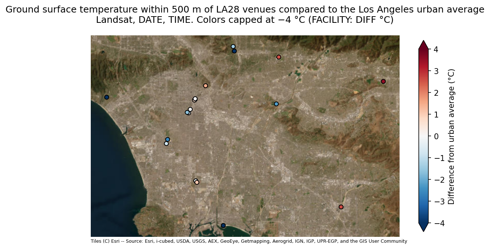

Final project
The project consists of two tasks:
- Task 1: add a blog post to your personal website based on one of your previous assignments and discussion sections. This task is 35% of the final project grade.
- Task 2: create a presentation-ready GitHub repository featuring geospatial analysis in Python. This task is 65% of the final project grade.
Submission instructions
Task 1: Eaton and Palisades Fires analysis blog post
In this task, you will transform your presentation-ready repository from Homework 4 into a polished blog post for your personal website and compile and streamline all its supporting notebooks.
Purpose
Your blog post should showcase two out of the three data analysis exercises we did related to the Eaton and Palisades Fires:
- False color image analysis (Hwk 4 - Task 2)
- Social dimensions analysis with the EJI dataset (week 8 discussion section exercises)
- Land cover statistics (exercises from the land cover statistics lesson)
Your audience is a fellow Python programmer with beginner-to-intermediate geospatial wrangling experience. This is an opportunity to highlight your skills and communicate your analysis in a clear and engaging way!
To help you understand the desired format and text-to-code ratio, review these examples:
Take note of how they balance explanations, code, and visualizations to communicate their analyses effectively.
In addition to the blog post, the notebooks used for the data analysis should be part of your presentation-ready GitHub repository. These notebooks contain work you have already completed and probably revised, so the effort should go into cleaning and streamlining them.
Setup
Guidelines
Your post should be streamlined, focusing on key steps and results. Avoid lengthy print checks and intermediate outputs, favoring concise, well-explained code chunks.
Your post should include (at least) the following:
- About section:
- Provide context for the analysis. Introduce the Eaton and Palisades Fires, their significance, and the relevance of your analyses.
- Include an image related to the analysis.
- Highlights of analysis:
- List of highlights of analysis (3 or 4 highlights). What do you consider to be the most important techniques used or insights from the analysis?
- Dataset descriptions:
- Describe the datasets you used and provide proper citations or references.
- Link to GitHub repository:
- Include a link to your GitHub repository at the top of the post. The repository should be presentation-ready and contain the full, detailed analysis.
- Organized data analysis sections:
- Break the analysis into logical sections.
- Include only the most relevant code.
- Aim for a clean, professional layout with properly formatted code snippets and images.
- Final visualizations:
- Showcase your main visualizations with clear captions. Follow each visualization with a description explaining takeaways and relevance.
Task 2: Urban heat around LA28 Olympic facilities
Los Angeles will host the 2028 Summer Olympic and Paralympic Games (LA28) in July and August, during peak summer heat. Many events will take place in existing stadiums, arenas and parks spread across the Los Angeles area, and heat is a major concern for athletes, workers and spectators. LA28 has pledged to include shade planning and heat mitigation in its preparations for the Games, and regional efforts such as ShadeLA aim to add shade around Olympic venues and in the city’s most heat-vulnerable neighborhoods [1].
In this task, you will do an analysis using Landsat surface temperature data: on a clear summer day, which LA28 facilities sit in areas hotter or cooler than the Los Angeles urban area as a whole, and by how much? You will answer this question in relative terms: how many degrees above or below the urban area’s average each facility is, on the same date.
About the data
You will work with three datasets for this task:
Landsat Collection 2 Level-2 surface temperature Access the
landsat-c2-l2collection from the Microsoft Planetary Computer STAC catalog [2]. You will use the surface temperature asset (lwir11). Pixels are 30 m, resampled from the thermal sensor’s native 100 m resolution.Los Angeles urban area The urban area polygons from the Census Bureau’s 2026 TIGER/Line shapefiles [3]. The Census defines urban areas as densely developed territory, so the average temperature over this polygon represents the city people live in, without the mountains, desert or ocean that a county or city boundary would include. This is the reference area you will compare each facility to. The name for the LA area is Los Angeles–Long Beach–Anaheim, CA.
LA28 facilities A CSV file with the 19 permanent, on-land LA28 competition facilities in the Los Angeles area, with their approximate coordinates. The list comes from the official LA28 venue list [4], cross-referenced with the venue statuses on Wikipedia [5]. It includes stadiums and arenas (e.g. SoFi Stadium, Crypto.com Arena, the Rose Bowl, Dodger Stadium) and other permanent sites such as Riviera Country Club, Santa Anita Park and the Fairplex. It leaves out:
- temporary venues (e.g. Venice Beach, Sepulveda Basin), since Landsat can only see what is built today;
- water venues (e.g. the Port of Los Angeles, Long Beach Marine Stadium), since over water Landsat measures the water surface;
- venues outside the Los Angeles area (e.g. Trestles, Oklahoma City, and the football stadiums in other cities).
All 19 facilities are inside the Los Angeles urban area. You can find the CSV file
la28-facilities.csvin the course data directory.
Setup
Instructions
1. Data analysis
Explore the vector data. Explore the data and write a summary of the information you obtained from the preliminary exploration.
STAC search. Use the Los Angeles urban area to search the Microsoft Planetary Computer STAC catalog for Landsat Collection 2 Level-2 scenes from June 1 to September 30, 2026. Your search should look similar to this:
search = catalog.search(
collections=___,
bbox=___,
datetime=___,
query={'eo:cloud_cover': {'lt': 10}},
)
items = search.item_collection()The query parameter of catalog.search() filters items by any property in their metadata. Here we use eo:cloud_cover (a percentage) to keep only scenes with less than 10% cloud cover. Clouds hide the ground from the thermal sensor, so we only want nearly cloud-free scenes.
- Pick a scene. Landsat scenes are tiles, and the Los Angeles urban area sits near the corner of one, so not every scene covers all the facilities. Adapt the following code so you can run it, and explain in a markdown cell what it does and what its output shows:
from shapely.geometry import shape # Move import to an adequate place
facilities_4326 = facilities.to_crs('epsg:4326')
for item in items:
footprint = shape(item.geometry)
print(item.id,
item.properties['eo:cloud_cover'],
'covers all facilities:', facilities_4326.within(footprint).all())Then pick a scene to use for your analysis and, in a markdown cell, justify your choice.
- Access the raster. Retrieve the item byou selected and open its surface temperature asset (
lwir11) as anxarray.DataArray. Plot the raster together with the facilities and the urban area polygon.
- The surface temperature file uses 0 to mark pixels with no data. Open the raster with
rioxr.open_rasterio(..., masked=True)so these pixels becomeNaNwhen the file is loaded and don’t sneak into your calculations.
- Convert to degrees Celsius. The values in the surface temperature raster are not temperatures. To save space, Landsat stores each temperature as an integer that needs to be converted back with
\[\text{temperature (K)} = \text{value} \times \text{scale} + \text{offset}.\]
The file itself doesn’t record the scale and offset (if you check the raster’s attributes you will see rioxarray’s defaults, a scale of 1 and an offset of 0). The real scale and offset are in the STAC metadata for the asset:
item.assets['lwir11'].extra_fields['raster:bands']Clip the raster to the Los Angeles urban area and convert its values to degrees Celsius. Review your results.
- Facilities vs. the urban area. Calculate each facility’s average surface temperature within 500 m of it, and its difference from the average surface temperature over the whole urban area. Before you start coding, take a moment to write step-by-step instructions for yourself about how to get this result. You don’t need to include these in your notebook, but you should have a plan before starting your code.
buffer() and make one calculation
- The
buffer()method of ageopandas.GeoDataFrameturns each point into a circle of a given radius, measured in the units of the geo-data frame’s CRS. - Do it for one facility first, then iterate.
- Difference plot. Make a bar plot showing each facility’s difference from the urban average. You can adapt this code to your results (
resultsis a data frame with columnsfacilityanddiff_from_urban_c):
plot_data = results.set_index('facility').sort_values('diff_from_urban_c')
colors = ['tab:red' if d > 0 else 'tab:blue' for d in plot_data['diff_from_urban_c']]
ax = plot_data['diff_from_urban_c'].plot.barh(figsize=(7, 7), color=colors)
ax.axvline(0, color='black', linewidth=0.8)
ax.set_xlabel(f'Mean surface temperature within 500 m minus urban average ({urban_mean:.1f} °C)')
ax.set_ylabel('')
ax.set_title('Surface temperature around LA28 facilities\nDATE, TIME')
plt.show()- Final map. Create a map of the facilities colored by their difference from the urban average, over a base map. Use the
contextilypackage for the base map. Here’s an example:

Discussion. In markdown cells, answer the following questions (short answers):
- Which scene (date) did you use? Which facilities have the minimum and maximum difference from the urban average, and what are these values?
- Explain two limitations of the data.
- Explain two limitations of the methods.
- Discuss your results in relation to the facilities’ locations and the type of facility (and any other characteristics you think matter).
- LA28 is planning heat mitigation for the Games. Based on your map, which venue would you prioritize for heat mitigation and why? What would you need to know beyond this analysis to make that recommendation?
2. Clean notebook
The target audience for your notebook is a fellow EDS 220 student who is just learning geospatial wrangling using Python.
- Add enough and appropriate comments to explain your code.
- First cell in the notebook must be a markdown cell including:
- At the top of the notebook, include an “About” section with the following subsections:
- The rest of your notebook should have:
3. Clean repository
Same as the instructions for Homework 4. Update your repository’s README with (at least) the following (based on EDS 296):